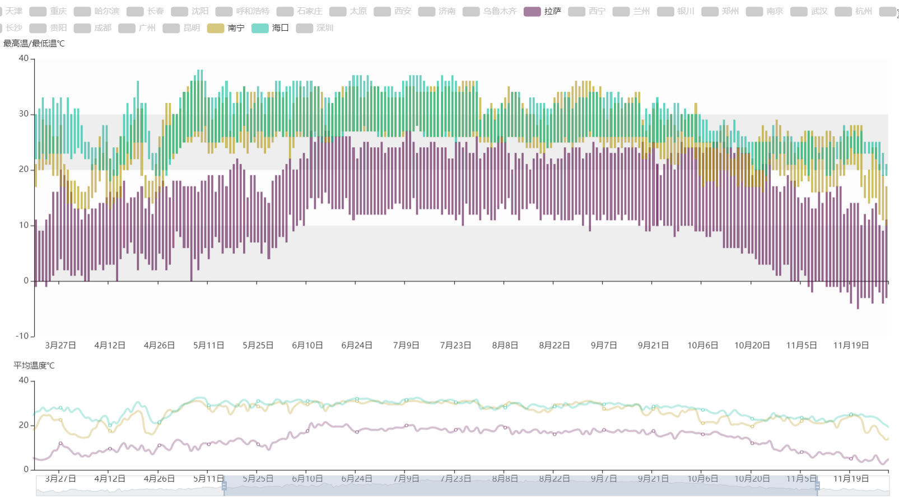

点击下方按钮查看详情
3D折线图图中选择的城市是拉萨、南宁、海口。展现的时间区间是2020年5月14日至2020年11月8日。可以看出南宁、海口的气候较为相近，拉萨气温低、昼夜温差大。 
我使用了一系列python工具，对气象台数据进行了爬取、存储、清理、计算、可视化。最终绘制了五类图表： 中国气象地图、年月份温度3D折线图、晴雨表、全年最高(低)温度柱状图以及全年平均温度折线图。为了充分地展现数据，每类图表又包含多张子图。 此网页展现的是可视化成果，并不能完全展示本人的工作量，详请请查阅报告书以及视频。